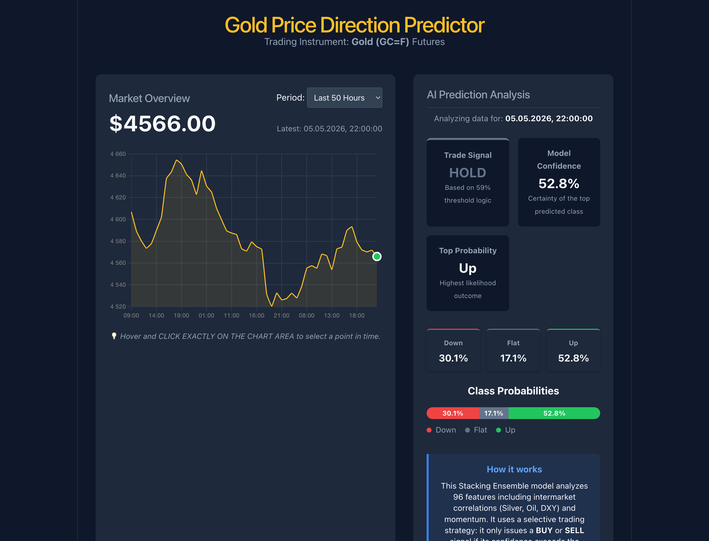
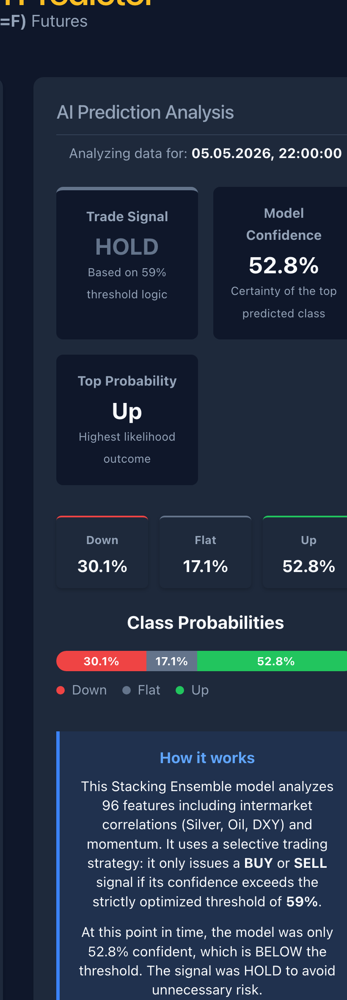

Студент: Мирумян Артём
Группа: БИВ234
Задача: предсказать направление движения цены фьючерса на золото (GC=F) на горизонте 24 часа. Три класса: Up (рост > 0.2%), Down (падение > 0.2%), Flat (остальное).
Почему именно эта метрика:
В трейдинге стандартная accuracy бесполезна — если модель угадывает 55% движений, но ошибается на крупных, реального профита нет. ROC-AUC честно показывает, насколько хорошо модель ранжирует вероятности — это общая мера качества. Но главная бизнес-метрика — Hit Rate (доля прибыльных сделок при фильтрации по порогу уверенности). Цель: Hit Rate ≥ 67% (2 к 1 по сделкам) при ≥ 100 сделках на тестовом периоде.
Основные данные: часовые OHLCV фьючерса GC=F с Yahoo Finance (yfinance), 2010–2024, ~60 000 строк.
Внешние макро-факторы (дневные, смержены через merge_asof):
| Тикер | Что это | Зачем |
|---|---|---|
| DX-Y.NYB | Индекс доллара (DXY) | Золото номинировано в USD |
| ^VIX | Индекс волатильности | Золото — защитный актив |
| ^TNX | Доходность 10-летних облигаций | Альтернативная доходность |
| SI=F | Серебро | Исторически коррелирует с золотом |
| CL=F | Нефть WTI | Индикатор инфляционных ожиданий |
Итого после мержа и feature engineering: 96 признаков.
Распределение классов в train:
| Класс | Доля |
|---|---|
| 0 (Down) | 34.4% |
| 1 (Flat) | 17.0% |
| 2 (Up) | 48.6% |
Очистка: удалены дубликаты по времени, строки с Volume = 0, NaN в OHLC.
Таргет: future_return = Close[t+24] / Close[t] - 1. Если > 0.2% → Up (2), если < −0.2% → Down (0), иначе → Flat (1).
Feature Engineering:
1. Технические: лаги доходности (1h, 2h, 4h, 8h, 24h, 48h, 72h), RSI-14, RSI-6, MACD + signal + histogram, Bollinger Bands (12 и 24 периода), ATR-14, z-score цены и объёма.
2. Макро: для каждого внешнего фактора — ret1d, ret5d, ret20d, z-score за 20 дней, отклонение от MA20.
3. Межрыночные: gold_silver_ratio, gold_minus_dxy_ret, gold_minus_silver_ret, скользящие корреляции gold/dxy, gold/silver, gold/tnx на 24h и 120h окнах.
4. Временные: циклическое кодирование (hour_sin/cos, dow_sin/cos), бинарные флаги сессий (Азия, Европа, NY, overlap EU/NY).
Важно про антилик: макро-данные мержились строго через pd.merge_asof(direction='backward') — каждой часовой свече присваивался последний известный дневной Close, не будущий.
Сплит: хронологический (без перемешивания): - Train: 65% | Val: 15% | Test: 20% - Val использовался только для подбора порога confidence, Test — финальный holdout.
LogisticRegression на базовых признаках золота без макро, порог = 0.45 (fixed).
| Метрика | Значение |
|---|---|
| ROC-AUC | 0.5441 |
| Accuracy | ~0.50 |
| Hit Rate (thresh=0.45) | 54% |
54% — почти монетка. Модель не даёт торгового преимущества.
Гипотеза: DXY, VIX, TNX, Silver, Oil дадут модели сигнал, которого нет в цене золота — ROC-AUC вырастет.
Как проверялось: обучил 5 моделей (LogReg, RF, GB, CatBoost, ExtraTrees) в двух вариантах: Variant A (только золото, ~58 признаков) и Variant B (золото + макро, 96 признаков). Сравнение на holdout test.
Результат:
| Модель | Вариант | ROC-AUC | Hit Rate (thresh=0.45) |
|---|---|---|---|
| LogisticRegression | A (без макро) | 0.5441 | 54% |
| LogisticRegression | B (с макро) | 0.5742 | 59% |
| RandomForest | A | 0.5381 | 57% |
| RandomForest | B | 0.5612 | 58% |
| CatBoost | A | 0.5490 | 58% |
| CatBoost | B | 0.5680 | 59% |
Гипотеза подтверждена. Внешние факторы пробили "потолок" ROC-AUC ~0.55, лучший результат — LogReg с макро (0.5742).
Гипотеза: мета-ансамбль (Stacking) даст лучше откалиброванные вероятности, чем каждая модель по отдельности. Хорошая калибровка → фильтрация по порогу эффективнее.
Как проверялось: собрал Stacking Classifier: - Base: RF, GradientBoosting, CatBoost, ExtraTrees - Meta: LogisticRegression (cv=3, out-of-fold предсказания)
Сравнение с лучшей одиночной моделью (LogReg tuned CP2).
Результат:
| Модель | ROC-AUC | Hit Rate (thresh=0.45) | Trades |
|---|---|---|---|
| LogReg CP2 (лучший baseline) | 0.5742 | 59% | ~1800 |
| Stacking CP3 (thresh=0.45) | 0.5732 | 57% | 1384 |
| Stacking CP3 (thresh=0.59) | 0.5732 | 74% | 149 |
ROC-AUC не вырос, но вероятности стали "острее" — при высоком пороге hit rate значительно выше, чем у LogReg. Гипотеза подтверждена.
Гипотеза: сканируя пороги [0.45–0.72] на val-выборке, можно найти такой порог, при котором модель торгует редко, но очень точно — и это не переобучение на val.
Как проверялось: для каждого порога считал Hit Rate и количество сделок на val. Выбрал порог с max Hit Rate при ≥ 25 сделках. Затем проверил на test без изменений.
Полная таблица сканирования (TEST SET):
| Threshold | Hit Rate | Trades | Avg Return/сделку | Cum Return |
|---|---|---|---|---|
| 0.45 | 57% | 1384 | +0.283% | +3.92 |
| 0.49 | 60% | 911 | +0.343% | +3.13 |
| 0.53 | 62% | 520 | +0.531% | +2.76 |
| 0.55 | 64% | 368 | +0.647% | +2.38 |
| 0.57 | 67% | 236 | +0.768% | +1.81 |
| 0.59 | 74% | 149 | +0.905% | +1.35 |
| 0.61 | 77% | 98 | +0.942% | +0.92 |
| 0.63 | 85% | 46 | +1.439% | +0.66 |
Гипотеза подтверждена. Val Hit Rate при 0.59 = 76%, Test Hit Rate = 74% — разница 2 п.п., переобучения нет. Выбран thresh=0.59: 149 сделок при 74% Hit Rate.
Гипотеза: удалить шумовые признаки (оставить top-50 по tree importance) и добавить class_weight='balanced' — это поднимет сам ROC-AUC.
Как проверялось: извлёк важности из v1 Stacking, отобрал top-50 признаков, обучил Stacking v2 с class_weight='balanced' на всех base-моделях.
Результат:
| Метрика | v1 (baseline) | v2 (balanced+top-50) | Δ |
|---|---|---|---|
| ROC-AUC | 0.5732 | 0.5592 | −0.014 |
| Accuracy | 0.5024 | 0.4893 | −0.013 |
| F1 macro | 0.3479 | 0.3324 | −0.016 |
| Hit Rate (thresh=0.59) | 74% | 64% | −10 п.п. |
| Trades | 149 | 118 | −31 |
| Avg Return/сделку | +0.905% | +0.484% | −0.42 п.п. |
Гипотеза отвергнута. Балансировка помогает F1-macro, но не ROC-AUC — разные цели. class_weight сдвигает decision boundary, не улучшает ранжирование. Остаёмся на v1.
Модель: Stacking Ensemble v1 (RF + GradientBoosting + CatBoost + ExtraTrees → LogisticRegression), 96 признаков, threshold = 0.59.
Итоговые метрики (holdout test, 2050 часов):
| Метрика | Значение |
|---|---|
| ROC-AUC | 0.5732 |
| Accuracy | 0.5024 |
| F1 macro | 0.3479 |
| Hit Rate (thresh=0.59) | 74% |
| Сделок | 149 |
| Avg Return / сделку | +0.905% |
| Cumulative Return | +1.35 |
Top-10 признаков по усреднённой важности дерев:
| # | Признак | Что означает |
|---|---|---|
| 1 | silver_ret20d |
20-дневная доходность серебра |
| 2 | oil_ret20d |
20-дневная доходность нефти |
| 3 | gold_silver_ratio |
Соотношение цен золото/серебро |
| 4 | dxy_ret20d |
20-дневная доходность доллара |
| 5 | tnx_change1d |
Дневное изменение доходности облигаций |
| 6 | gold_minus_dxy_ret |
Сила золота относительно доллара |
| 7 | vix_zscore20 |
Z-score VIX за 20 дней |
| 8 | oil_zscore20 |
Z-score нефти за 20 дней |
| 9 | return_48 |
48-часовая доходность золота |
| 10 | silver_zscore20 |
Z-score серебра за 20 дней |
Интерпретация: модель делает ставку в основном на макроэкономический контекст — если доллар падает, нефть и серебро растут, VIX низкий (нет паники), это сильный сигнал для золота. Технические признаки самого золота (RSI, MACD) важны значительно меньше. Когда сигнал слабее 59% уверенности — модель отказывается от сделки.
Архитектура:
- Backend: FastAPI (app/main.py), грузит models/cp3_stacking_model.pkl при старте. Эндпоинт /api/latest отдаёт последние ~720 часов цены, по каждой точке — вероятности всех трёх классов и итоговый сигнал с учётом порога 0.59.
- Frontend: React + Vite + Chart.js (frontend/). По клику на точку графика справа обновляется блок с Trade Signal, Model Confidence и вероятностями Down/Flat/Up.
Запуск:
# Backend
uvicorn app.main:app --reload # http://127.0.0.1:8000
# Frontend
cd frontend && npm run dev # http://localhost:5173

Слева Market Overview с интерактивным графиком цены и переключателем периода (50 / 100 / 200 / 500 часов). Справа AI Prediction Analysis: верхние карточки Trade Signal, Model Confidence и Top Probability дают итоговое решение, ниже — явные проценты по каждому из трёх классов и стэк-полоска Class Probabilities, чтобы сравнить их одним взглядом.

Состояние модели на момент 05.05.2026, 22:00 (цена $4 566):
| Поле | Значение |
|---|---|
| Trade Signal | HOLD |
| Model Confidence | 52.8% |
| Top class | Up |
| P(Down) / P(Flat) / P(Up) | 30.1% / 17.1% / 52.8% |
Top-класс действительно Up, но уверенность 52.8% ниже порога 0.59, поэтому signal = HOLD. Это и есть та самая селективность из Эксперимента 3: модель торгует редко, но точно, что даёт Hit Rate 74%. Внизу панели How it works дублирует это объяснение прямо для пользователя.
Предсказание цен на рынке — сложная задача. Базовая LogReg без контекста даёт ROC-AUC ~0.54 — едва лучше случайного. Это ожидаемо для эффективного рынка.
Главный драйвер роста — макроэкономика. Добавление DXY, VIX, Silver, Oil подняло ROC-AUC с 0.54 до 0.57. Модель научилась понимать "состояние рынка", а не просто смотреть на цену золота.
Правильная метрика важнее ROC-AUC. Stacking не улучшил ROC-AUC относительно LogReg, но за счёт лучшей калибровки вероятностей дал Hit Rate 74% при пороге 0.59. Модель торгует редко (149 из 2050 часов), но точно — +0.905% за сделку покрывает реальные биржевые комиссии.
Классическими трюками (балансировка, отбор фичей) ROC-AUC в финансовых задачах не улучшить — Эксперимент 4 это подтвердил. Нужен либо принципиально новый сигнал, либо более длинный горизонт.